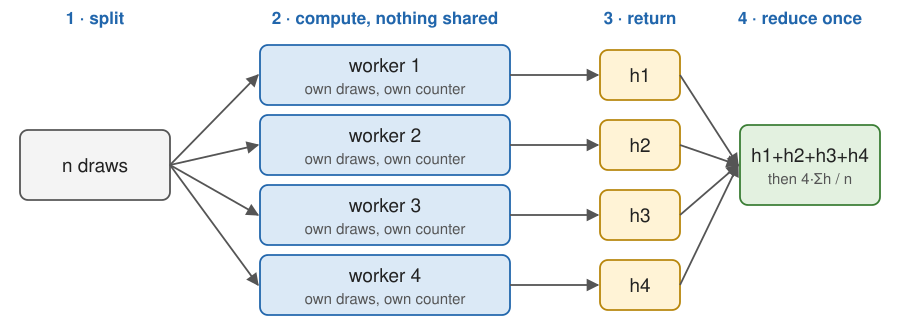

Waiting is overlapped; computing must be split
Only if time: Markov chains, lazy coroutines · ✏️ A3d, your own slow server
⬅ 2 — Dispatch · Next: 4 — Memory & batching ➡
| the time goes into… | fix | cores needed | |
|---|---|---|---|
| Concurrency | waiting (network, disk) | overlap the waits | one is enough |
| Parallelism | computing | split the work | several |
Waiting is overlapped; computing must be split.
One core is enough: only waiting to overlap.
Bet first: how long does each one take?
▶ Script: cell “Three ways to fetch”
| time | what happened | |
|---|---|---|
| 1) sequential | ~4 s | sum of 15 waits |
2) @async without @sync |
~10 µs | ⚠️ timed task creation only |
3) @sync + @async |
~0.3 s | ≈ one round-trip |
@sync: honest timing and correct result.Stop the timer when the results are there.
from concurrent.futures import ThreadPoolExecutor
def download_all(days):
with ThreadPoolExecutor(max_workers=len(days)) as pool:
return list(pool.map(close_of, days)) # results, in input orderpool.map submits every call; leaving with waits for all.
with+map=@sync+@async: submit all, wait for all.
🐍 Python (Colab) · local .py · Julia, Part A · 20 min
Classify first: is the time spent waiting or computing?
ThreadPoolExecutor on… |
speedup |
|---|---|
| I/O (15 URLs) | ~10× |
| CPU, pure-Python loop | ~1× |
“Threads are pointless in Python”: false. It depends on where the time goes.
julia --threads=auto (else nthreads() = 1).Threads.nthreads() = 22. Julia has no GIL.
@asyncand@spawnlook alike. Only one uses more cores.
@asyncBet first: π (
n = 10⁸),@async× 22: speedup? ▶ Script: cell “Same CPU work with @async”
| time | speedup | |
|---|---|---|
pi_seq (one core) |
0.357 s | — |
@async × 22 |
0.332 s | 1.1× |
@spawn × 22 |
0.057 s | 6.3× |
π on all 22 threads, 20 million points, one task per thread.
What does it print? ▶ Script: cell “π on all threads, one task per thread: what does it print?”
| run 1 | run 2 | run 3 | run 4 | |
|---|---|---|---|---|
pi_race |
0.219 | 0.361 | 0.354 | 0.393 |
pi_spawn |
3.14126 | 3.14174 | 3.14172 | 3.14146 |
Warning
No error. No warning. Just a wrong number.
hits is 7. Two tasks each run hits += 1. Write the six steps in one possible order.
| step | task A | task B | hits in memory |
|---|---|---|---|
| 1 | read 7 | 7 | |
| 2 | read 7 | 7 | |
| 3 | add → 8 | 7 | |
| 4 | add → 8 | 7 | |
| 5 | write 8 | 8 | |
| 6 | write 8 | 8, not 9 |
hits += 1is three operations: an increment is lost.
No shared counter in the hot loop: correct and fast.
▶ Script: cell “The cure”

Shared only at the final sum: once per worker, not once per draw.
🐍 Python (Colab) · local .py · Julia, Part B · 30 min
Check the code with a known count; check π with a tolerance.
Threads.Atomic makes hits += 1 safe. Correct? Fast?
▶ Script: cell “Why not an atomic counter?”
22 threads, vs pi_seq (1 core) |
|
|---|---|
pi_spawn (return + reduce) |
6.3× faster |
pi_atomic |
~7× slower |
Correct, but slower than one core. The cure is to share less, not to protect the sharing.
Bet first: speedup on 2, 4, 22 threads? ▶ Script: cell “Speedup vs nthreads” (
--threads=1, 2, 4)
| threads | 1 | 2 | 4 | 22 |
|---|---|---|---|---|
| speedup | 1× | 1.8× | 3.1× | 6.3× |
| efficiency | 100 % | 90 % | 78 % | 29 % |
6 fast (5.0 GHz), 8 medium (3.8 GHz), 2 slow (2.5 GHz) cores.
22 equal π tasks, each timed (demo, not in the script):
| fastest task | slowest task |
|---|---|
| 0.022 s | 0.051 s (2.3×) |
The slowest task sets the wall clock. Fix: more, smaller tasks.
| the time goes into… | Python | Julia |
|---|---|---|
| waiting | threads, asyncio |
@async / @sync |
| computing, Python bytecode | processes | does not apply |
| computing, native (NumPy, BLAS) | threads can help | @spawn / fetch |
First find out which one you have.
For each: which tool, why, what would you measure first?
for loop in pure Python over 10⁷ pairs.X.T @ X on a large NumPy array.Your project: which computations don’t depend on each other? Which variable would several workers update?
⬅ 2 — Multiple dispatch vs OOP · Next: 4 — Memory & batching ➡
fetch_all; then swap concurrent for serial.🐍 Python (Colab) · local .py · Julia · 20 min
markov_seq(K, L) = [simulate_markov(L) for _ in 1:K]
markov_spawn(K, L) =
fetch.([Threads.@spawn simulate_markov(L) for _ in 1:K])K = 8 chains, L = 2×10⁷ steps, no shared state.▶ Script: cell “Predict the speedup on 8 chains, then run”
Same pattern as π: each task returns,
fetchcollects.
Julia @async |
Python async def |
|
|---|---|---|
| the task is… | eager: running | lazy: a coroutine object |
| ready at once | 0 / 15 | 0 / 15 |
| 2 s later | 15 / 15 | 0 / 15: never started |
@sync.await / asyncio.gather.
asyncio.gather=@sync+@async.